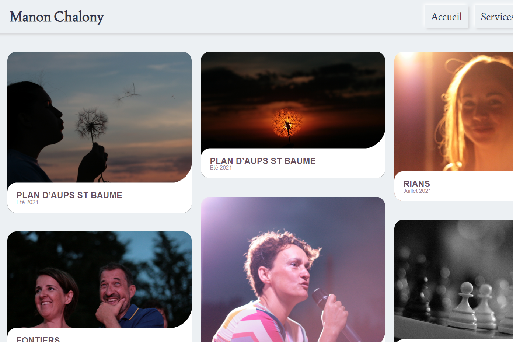
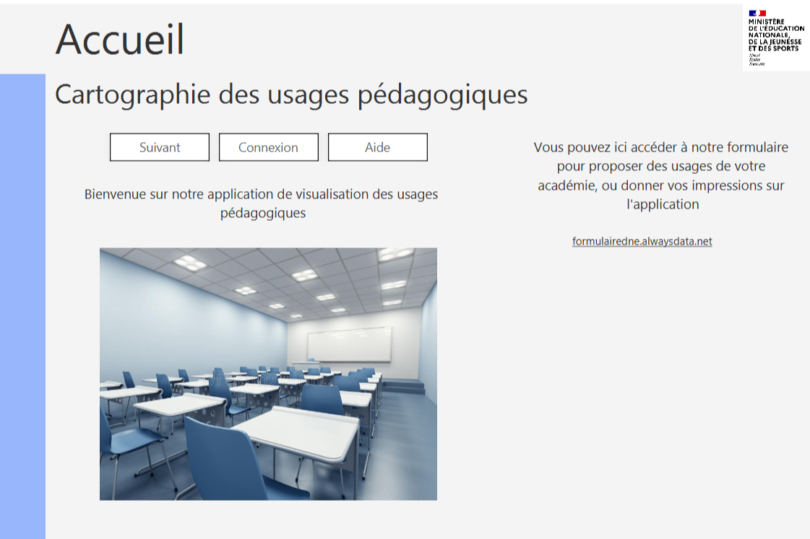
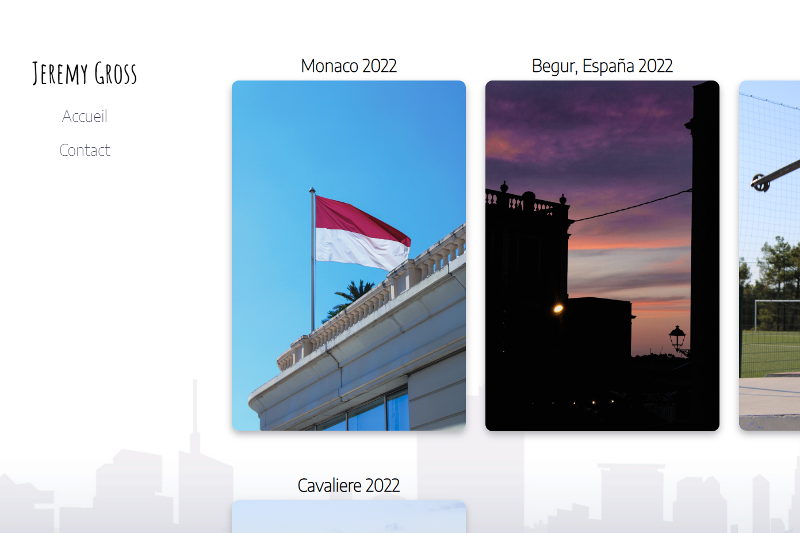

Photography website

I used Html and css to make it. It tooked me around 20 hours to code it. There are three
different pages on it : first, the "portfolio" of the photographer, with for each photo a title and a date.
Afterwards, we have the page to contact the photographer via a form. And finally, a contact page where you can find the
photographer's networks. It's the first time that I made a responsive menu. You can found the code in
my GitHub.
Pedagogical uses

This project has been writed in java, javafx and fxml. Firstly, you can found an home page, were you can see a link for a form online,
that I made with HTML and CSS. Then, you have a help button, that show you some help for using our app. Also, you have a connexion button
that ask you an user id and a password (the user is "admin" and the password is "password"). The admin
can add what they want into our database. After, you have a page were you can choose the view of the uses : either by academies or by
theme. And when you choose a view, you have it and you can choose your academy or thematics to view the attached uses.
Photography website 2

The last website that I made. This is a website for a recent passion, and yeah, this is the second photography website that I
made. This time, I wanted to create page for each collection of photos, to expose them to the visitor. I'd try new differents things,
as the fixed background, the navigator location, that I place at the left of the screen, or the "card" that I made for the contact
page's. Now, I think that I acquired a good experience in photography website, so don't hesitate if you need one ! I really encourage
you to go on this website if you are interesting in photography or in art in general !